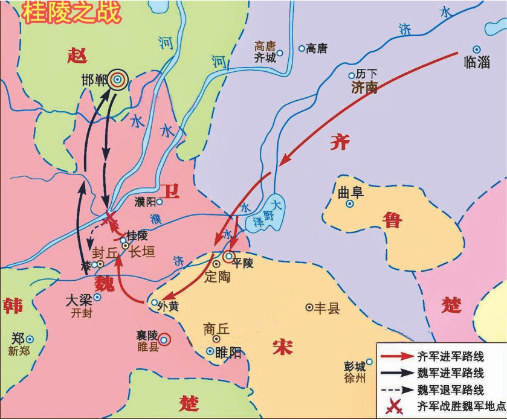
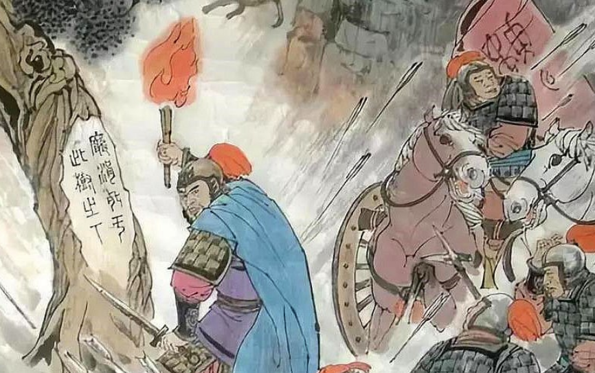
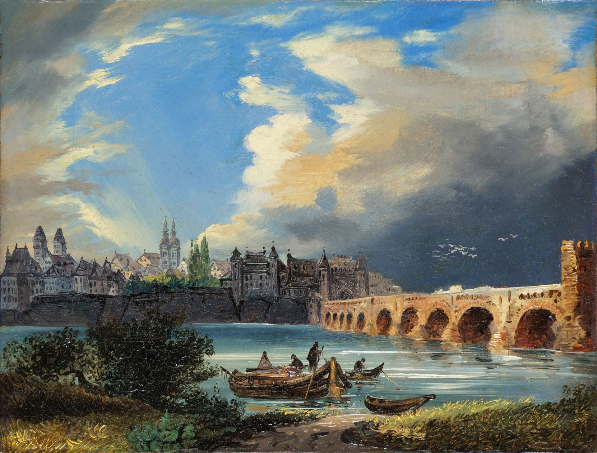

드레스덴 전투 (3) - BC 353 vs. AD 1813
게시: 2024-03-04T06:30:48+09:00
기원전 353년 위나라 군대가 조나라의 수도 한단을 포위하자 조나라는 제나라에 구원을 요청했습니다. 제왕이 조나라에 구원군을 보내려 하자, 손빈이 그를 말리면서 위군이 조나라에 몰려가 상대적으로 텅 비어있던 위나라의 도읍 대량을 치도록 했습니다. 그렇게 되자 당황한 위군은 자신들의 도성을 구하려 조나라에 대한 포위 공격을 풀고 회군했습니다. 이것이 사기에 나오는 위위구조(圍魏救趙)라는 고사성어에 얽힌 이야기입니다. 아마 이 이야기에 나오는 손빈이 1813년 8월 드레스덴을 구원해야 하는 나폴레옹이 드레스덴에 입성하지 않고 피르나를 향하는 모습을 보았다면 무릎을 탁 치며 저 서양인은 자신의 수제자나 다름없다고 감탄했을 것입니다.

(위나라가 조나라의 한단을 공격할 때, 제나라가 위나라의 대량을 침으로써 한단의 포위를 풀게 만드는 과정입니다. 제나라와 위나라의 싸움은 십여년 뒤, 방연과 손빈의 악연이 극적인 결말을 맞게 되는 마릉 전투로 이어집니다.)

(마릉 전투에서, 손빈은 위군이 야간에 통과할 지점에 있는 나무의 껍질을 깎아 거기에 글씨를 써놓습니다. 어두운 밤 위군을 이끌고 그 앞에 도착한 방연은 그 글씨를 읽고자 불을 밝힙니다. 거기에는 '방연이 이 나무 아래서 죽는다'라고 씌여 있었고, 미리 손빈의 지시를 받고 매복해있던 제군은 불빛이 켜지자 마자 그 불빛을 목표로 집중 사격을 날립니다.) 만약 나폴레옹이 근위대를 끌고 보헤미아 방면군의 퇴로인 남쪽 피르나에 갑자기 나타난다면, 가뜩이나 나폴레옹을 두려워하던 연합군 수뇌부는 크게 흔들릴 것이 분명했습니다. 하지만 그런 중국 역사 이야기에는 배수의 진 이야기도 나옵니다. 적을 칠 때는 퇴로를 열어주고 쳐야지, 퇴로가 끊긴 적은 궁지에 몰린 쥐처럼 고양이를 물 수도 있는 법입니다. 아무리 나폴레옹의 이름값이 있다고 해도, 만약 앞은 드레스덴이요 뒤는 나폴레옹인 상황이 되어 오도가도 못하게 된다면, 아무리 상대가 허접한 오스트리아군이라도 해도 목숨을 걸고 맹렬하게 싸울 것이 분명했습니다. 위위구조의 핵심은 싸우지 않고도 적에게 물러나게 만드는 것이지, 적을 궁지에 몰아넣고 사생결단을 내게 하는 것이 아니었습니다. 모든 군사 작전은 목표가 분명해야 하는 법입니다. 그게 불분명하면 '미해군 항모가 발견되면 그걸 치고 발견 안 되면 미드웨이 활주로를 친다'는 식의 어정쩡한 작전을 펼치다 자멸한 일본해군처럼 우왕좌왕하다 망해버리는 수가 있기 때문입니다. 나폴레옹이 당장 원하는 것은 드레스덴의 구원이었을까요, 아니면 보헤미아 방면군에 대한 포위섬멸전이었을까요? 뤼첸과 바우첸에서도 그랬습니다만, 나폴레옹은 언제나 연합군을 포위섬멸하는 것을 목표로 했습니다. 그러니 이번에도 당연히 위위구조와 같은 '위협에 의한 구원작전'이 아니라 진짜 결전을 원했을 것입니다.
하지만 다시, 모든 군사 작전은 상황에 따라 펼쳐야 하는 것입니다. 뤼첸과 바우첸에서 나폴레옹은 연합군에 비해 월등히 많은 병력을 가지고 있었습니다. 그러니 포위만 할 수 있다면 적을 섬멸하는 것이 가능했던 것입니다. 그런데 8월 23일 현재 상황에서는 당장 강행군으로 끌고 갈 수 있는 부대는 약 5만의 근위대와 빅토르 지휘하에 럼부르크에 주둔시키고 있던 약 2만의 제2군단 뿐인데, 보헤미아 방면군 20만을 앞뒤에서 포위한다? 아무리 나폴레옹이라고 해도 이건 씹지도 않고 삼키기에는 너무 큰 떡이 아닐까요? 여기서 역사책을 읽고 있는 우리는 드레스덴으로 몰려간 보헤미아 방면군이 무려 20만이라는 것을 알고 있습니다만, 당시 나폴레옹은 적의 규모를 명확히 몰랐습니다. 앞서 언급했듯이 이 과감한 포위 작전은 '오스트리아군 전체가 몰려왔다'라는 생시르의 보고를 나폴레옹이 전형적인 과장이라고 치부했기 때문에 기획되었던 것입니다. 하지만 나폴레옹에게는 꾸준히 각종 정찰 보고가 날아들었습니다. 하루 이틀이 지나자, 드레스덴에 몰려든 보헤미아 방면군의 규모가 예상보다 훨씬 큰 20만이라는 것이 분명해졌습니다.
나폴레옹은 자존심이 강한 중2병 환자였지만, 자존심 때문에 자신의 오판을 인정하지 않는 사람은 아니었습니다. 그는 저런 대군을 상대로 이 정도의 병력으로는 포위 섬멸전이 무리라고 판단하고는 전형적인 수비전으로 방향을 바꿉니다. 이젠 포위가 문제가 아니라 압도적인 수적 우위를 가진 적군에 맞서 어떻게 버틸 것인지가 더 문제였습니다. 그런데... 여기서 자신과 함께 피르나로 향하게 했던 방담의 제1군단은 여전히 피르나 방향을 향했습니다. 대체 나폴레옹은 무슨 생각이었을까요? 3만 규모의 군단 하나를 적의 배후로 밀어넣는 것이 여전히 적의 심리적 불안을 야기하는 효과를 낸다는 생각이었을까요? 설마 군단 하나로 20만 대군의 퇴로를 끊겠다는 생각이었을까요?
그 이야기는 나중에 보도록 하고, 여기서 다시 나폴레옹의 근위대 포병장교인 노엘의 기록을 통해 당시 상황을 엿보도록 하겠습니다. 의외로 간단합니다. With Napoleon's Guns by Colonel Jean-Nicolas-Auguste Noël ---------------- 전날 우리는 늦게까지 행군하느라 몇시간 밖에 쉬지 못했는데도 25일 새벽, 슈토플렌에서 기상나팔(reveillé, 레베예, 깨운다는 뜻)은 매우 일찍 울렸다. 행군 계획이 변경되어 우리는 피르나가 아니라 이제 드레스덴을 향하게 되었다. 밤 사이에 급보가 도착했고 그에 따라 나폴레옹은 계획을 변경했다. 드레스덴이 위험에 빠진 것이다. 우리가 드레스덴에 도착한 것은 26일 오전 10시 경이었다. 아슬아슬하게 시간을 맞춘 셈이었다. 강 우안의 노이슈타트(Neustadt, 새로운 마을이라는 뜻, 원래 엘베강 좌안에 있던 드레스덴이 확장되면서 생겨난 신시가지)에 들어가기 전에, 우리 눈에는 강 건너편 고지에 전체 연합군이 전개된 모습이 들어왔다. 아침부터 외곽에서는 간헐적인 포격이 이루어지고 있었다. 적군은 황제 폐하께서 도착하신 것을 모르고 있는 것이 분명했다. 그들은 황제 폐하께서 아직 슐레지엔에 있다고 생각했다. 고작 2만의 병력이 지키고 있는 이 도시를 그들이 전날부터 공격하지 않고 망설이고 있다는 것은 이해가 안 가는 일이었다. --------------------------


(19세기 초 드레스덴의 모습입니다. 엘베 강변의 피렌체라는 별명답게 아름다운 도시입니다. 노엘 대령이 노이슈타트에서 바라본 드레스덴의 모습이 딱 저랬을 것입니다.) 당시 상황은 여기 노엘 대령이 회고록에 담담히 적어놓은 것보다 훨씬 심각했습니다. 보헤미아 방면군은 무려 나흘 전인 22일 저녁, 드레스덴에서 불과 20km, 그러니까 불과 하루 행군거리도 안 되는 피르나를 점령했었습니다. 23일 저녁이면 이미 드레스덴의 성문을 두들기고도 남을 시간이었습니다. 그런데 그토록 급히 달려온 나폴레옹의 근위대가 드레스덴에 간신히 도착한 것은 26일 아침이나 되어서였습니다. 24일 25일 양일간 보헤미아 방면군은 고작 2만이 지키고 있는 드레스덴을 충분히 점령할 수 있었습니다. 노엘 대령이 이해를 할 수 없다고 적었듯이, 대체 그들은 그런 황금같은 이틀을 허송세월하며 뭘하고 있었을까요? 여기서 보헤미아 방면군 총사령관 슈바르첸베르크의 사정을 보시겠습니다. 그는 보헤미아에 주둔하고 있을 때부터 정말 쉽지 않은 시간을 보내고 있었습니다. 뤼첸 전투때부터 비트겐슈타인이 겪던 것과 동일한 문제 때문이었습니다. 바로 알렉산드르였습니다. Source : The Life of Napoleon Bonaparte, by William Milligan Sloane Napoleon and the Struggle for Germany, by Leggiere, Michael V With Napoleon's Guns by Colonel Jean-Nicolas-Auguste Noël https://warfarehistorynetwork.com/article/napoleons-last-great-victory-the-battle-of-dresden/ https://en.wikipedia.org/wiki/Battle_of_Dresden https://www.handannews.com.cn/news/content/2023-04/07/content_20103215.html https://youtu.be/5OCOFwima5g?si=Oj5U3vldmT-IylNl https://drouot.com/en/l/21410182-19shi-ji-chu-ou-zhou-xue-xiao-de-guo-cheng-shi-de-lei-si-dun